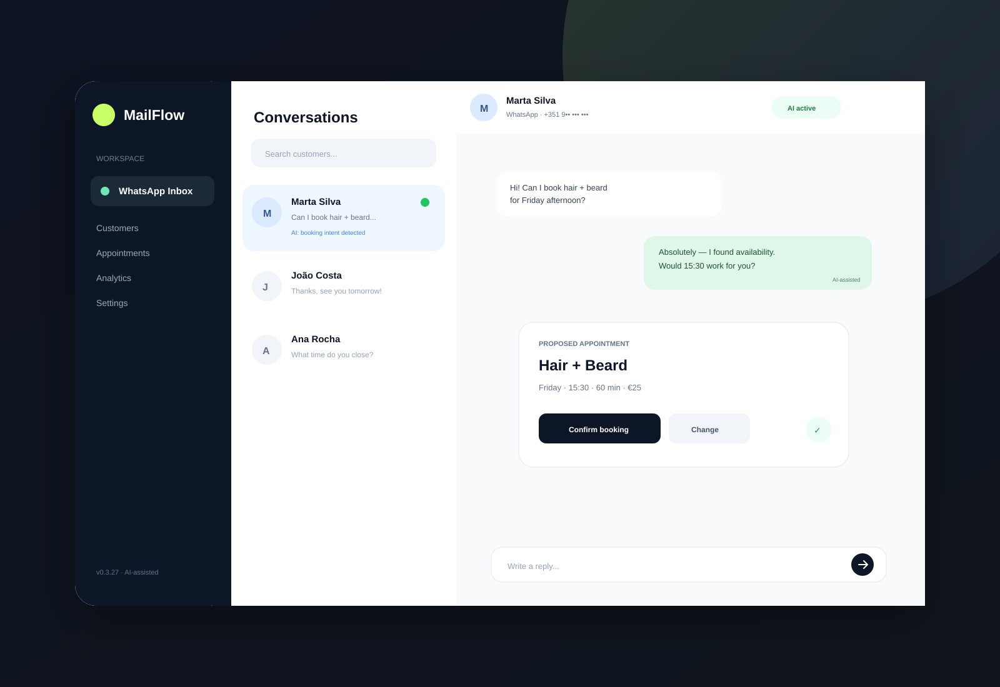

01 / FEATURED
In active development
MailFlow AI
A multi-tenant SaaS that turns WhatsApp conversations into a structured customer-service and booking workflow for small service businesses.
What it does
Centralises WhatsApp conversations, uses AI to understand customer intent, handles guarded automatic replies, creates and manages bookings, and synchronises confirmed appointments with Google Calendar.
How I built it
Built with tenant isolation and Supabase RLS, signed provider webhooks, idempotent message handling, deterministic availability checks and a security-focused backend. Twilio powers the current WhatsApp sandbox, with a Meta Cloud API foundation for production.
Next.js 16React 19TypeScriptSupabaseOpenAITwilioGoogle CalendarTailwind